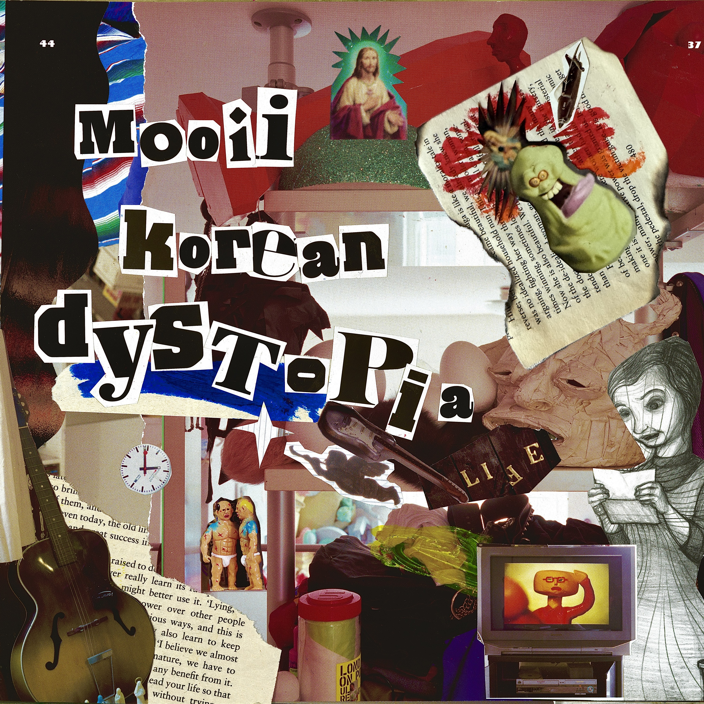

New Release
정규 1집 《Korean Dystopia》

Artwork By Mooii
본 앨범의 내용은 2020년대 초중반 대한민국에서 발생했던 일들을 다룹니다. 그래서 이 앨범을 더 재미있게 즐기기 위해서는 당시의 사회적 맥락을 이해하는 것이 도움이 됩니다. 이 기간에 한국에 살았다면 가사의 맥락이 이해되겠으나, 그렇지 않은 리스너들을 위해 이 사건들에 대한 주석을 영문 페이지에만 작성해 두었습니다.
사회적 사건에 대해서 깊게 파고들거나, 가치 평가를 내리는 앨범은 아닙니다. 다만, 어떤 현상을 보고 그 순간에 느꼈던 감정과 생각들을 가사로 박제했습니다. 가사는 쓰는 데 별로 긴 고민의 시간을 들이지 않았습니다. 퇴고하지 않았고, 검열하지 않았습니다. 이 앨범이 만들어지는 과정에서 손창현은 언론인, 김재현은 소프트웨어 개발자, 정민구는 프리터족, 김다미는 대학생, 김준성은 고등학생으로 삶을 살았습니다. 우리의 음악은 이러한 각자의 삶의 부산물로서 발생했고, 이 앨범은 그러한 곡들을 유기적으로 담은 결과입니다.
음악적인 레퍼런스로 픽시즈, 페이브먼트, 조이디비전, 스트록스 등의 밴드가 있었으나 멤버들 모두가 동의할 수 있는 하나의 장르적 합의점은 여러 번의 언쟁 끝에도 결국 찾지 못했습니다. 그래서 곡마다 각자 하고 싶은 플레이를 하게 됐습니다. 대체로 드러머 정민구는 펑크를, 기타리스트 김재현은 포스트펑크 리바이벌/슈게이징을, 베이시스트 김준성과 김다미는 포스트펑크를, 보컬 손창현은 얼터너티브/하드록을 표방하고 있습니다. 저희가 작곡에 참고한 곡은 기억나는 대로 전부 표기해 두었습니다.
Tracklist
트랙별 설명
정규 1집 《Korean Dystopia》 수록곡 12곡의 배경과 이야기입니다. 각 곡을 눌러 펼쳐볼 수 있습니다.
01 블루하와이 ▸
Lyrics
불을 붙혀놓고 태워 버리려 했었지 즐거운 모습들이 배알이 너무 꼴려서 날 좀 봐달라고 목구멍 끝까지 차올랐어 계속 이럴거면 나도 가만있지 않을거야 전부 겁을 먹게 만들거야 전부 겁을 먹게 만들거야 전부 겁을 먹게 만들거야 전부 겁을 먹게 만들거야 전부 겁을 먹게 만들거야 전부 겁을 먹게 만들거야
Behind
2023년 남원 요천비치 페스티벌에 참가하게 된 무이는, 여름을 주제로 한 곡을 하나 써 가기로 한다. 가제를 블루하와이로 짓고, 멜로디를 포함한 모든 음악적인 부분을 완성했지만 가사가 나오지 않았다. 그 해 여름은 아주 덥고 습했고, 이 때쯤 한국에서 연쇄적으로 칼부림 사건이 일어난다. 우리는 맥주를 마시면서 관련된 얘기를 한참 했다. 다음날 손창현이 이 가사를 가져왔다. 멤버 일부가 가사의 내용에 반대했으나 다음 주에 페스티벌에서 선보여야 했기에 더 수정할 시간이 없었고 그대로 곡이 나왔다. 최원종을 조롱하는 가사라고 한다.
Reference
Pavement — Summer Babe, Elevate Me Later / Pixies — Surfer Rosa (guitar riffs)
Motive
서현역 칼부림사건
credits: 작사 손창현 · 작곡 김재현, 손창현 · 편곡 무이 · 보컬 손창현 · 백그라운드 보컬 김다미 · 리드 기타 김재현 · 리듬 기타 김재현 · 어쿠스틱 기타 손창현 · 베이스 김준성 · 드럼 정민구 · 믹싱 오권호, 김재현 · 레코딩 스팟사운드 스튜디오, 그라운드 합주실에서 마이킹
02 원점이탈 ▸
Lyrics
눈이 떠질 때마다 받아 들이기 싫은 사실들에 조여져 몸은 계속 떨려와 마치 녹은 얼음과 같이 흘러가는걸 애써 잡으려해도 안된다는걸 알아 모든게 모든게 모든게 원래 없었어 모든게 모든게 모든게 원래 없었어 모두가 내게 말해 내가 병신이라고 나도 그정돈 알아 알지만 못하는 날 모든게 모든게 모든게 원래 없었어 모든게 모든게 모든게 원래 없었어 모든게 모든게 모든게 원래 없었어 모든게 모든게 모든게 원래 없었어
Behind
이별 후에 쓴 곡. 원래 제목은 여명이었으나, 그 다음으로 만들어진 곡이 "숙취"였기 때문에 정민구가 이대로 가다간 알코올 중독자의 밴드처럼 보이겠다고 제목을 원점이탈로 바꾸었다.
Reference
Pavement — Grounded
credits: 작사 손창현 · 작곡 김재현, 손창현 · 편곡 무이 · 보컬 손창현 · 리드 기타 김재현 · 리듬 기타 손창현 · 베이스 김다미 · 드럼 정민구 · 믹싱 김재현 · 레코딩 하모닉스 합주실에서 마이킹
03 캔들맨 ▸
Lyrics
개미집을 지어놨어 모든걸 끌어다 지었어 빗자루질 한방에 다 모든게 박살이 났어 내가 세운 계획이 다 휴지조각이 되었어 내가 세운 계획이 다 휴지조각이 되었어 모든걸 다 끌어모은 내 바벨탑이 무너졌어 모든걸 끌어모아서 또다시 지어보겠어 내리막길은 언젠가 끝을찍고 올라가 정신승리가 아니면 버티기가 힘들어 내가 세운 계획이 다 휴지조각이 되었어 내가 세운 계획이 다 휴지조각이 되었어
Behind
상승장에 주식으로 돈 좀 벌었다고 꺼드럭대다가, 며칠 뒤에는 돈을 많이 꼬라박았다며 신세 한탄하는 사람들을 조롱하기 위한 곡이다. 사실 우리도 벌었고, 잃었기 때문에 스스로 자조하는 곡이기도 하다. 음악적인 부분은 "고종수 vs 구자철"이라는 제목의 유튜브 영상을 인상 깊게 본 정민구가 이런 식으로 시작하는 곡이 있었으면 좋겠다고 제시하며 시작되었다. 본 영상은 딱히 내용이랄 건 없고, 고종수와 구자철의 세리머니 사진을 웃길 목적으로 난해하고 정신없이 편집한 개그 목적의 영상이다.
Reference
Stevie Ray Vaughan — Pride and Joy / Rabbids Go Home Music — Bãtutã Din Moldova
Motive
2022 비트코인 상승장 / 2026 주식 상승장
credits: 작사 오준명, 손창현 · 작곡 김재현, 손창현, 정민구 · 편곡 무이 · 보컬 손창현 · 리드 기타 김재현 · 리듬 기타 김재현 · 베이스 김준성 · 드럼 정민구 · 사운드 이펙트 김재현 · 믹싱 남경운 · 레코딩 산보 스튜디오
04 검은비 Instrument ▸
Behind
핵폭발 직후나 대규모 화재, 공기 오염 등으로 인해 먼지와 방사성 물질 등이 섞여서 내리는 검은색 비를 뜻한다.
Reference
영화 《검은비》(이마무라 쇼헤이) / Super Smash Bros. Melee(2001) OST — All-Star Rest Area / 불싸조 — 닭국물에서 노을을 보다
Motive
2026 미국 이란 전쟁
credits: 작곡 김재현, 오준명 · 편곡 무이 · 기타 김재현 · 베이스 김준성 · 드럼 정민구 · 믹싱 김재현 · 레코딩 산보 스튜디오
05 레드필 Title Track ▸
Lyrics
당신의 손에 쥐어진 빨간약을 난 삼켜버렸고 무책임하게 당신을 꿈에 품었네 날 탓하지 말아줘요 두려움에 완전히 젖어버린 나의 꿈속에 남아줘요 여전히 난 변한게 없는데 세상은 너무 멀어보이네 이미 없어졌어 아직 살아있는데 나를 바라봐 나를 좋아하라고 모두 다 죽어버리라고 소리를 암만 질러봐도 어지러운 목소리들만 계속 메아리치고 있네 이젠 그 무엇도 아무 소용이 없네 내가 먼저 죽어버려야지 이미 없어졌어 아직 살아있는데 나를 바라봐 나를 좋아하라고
Behind
김준성: 김준성과 김재현이 다른 멤버들보다 조금 일찍 도착했는데, 딱히 할 일이 없던 차에 김준성이 8비트의 단순한 4음 베이스 라인을 치기 시작했고 김재현이 그 위에 기타 트랙을 얹었다. 가사는 같은 날 김준성이 썼다. 곡의 내용은 제목 그대로 단순하다. 욕망에 사로잡혔지만 그 욕망이 아무것도 이루지 못할 인셀의 이야기이다.
Reference
Joy Division — Transmission
Motive
앤드류 테이트 유튜브 구독자 지인
credits: 작사 김준성 · 작곡 김준성 · 편곡 무이 · 보컬 손창현 · 리드 기타 김재현 · 리듬 기타 1 김재현 · 리듬 기타 2 손창현 · 베이스 김준성 · 드럼 정민구 · 사운드 이펙트 오권호 · 믹싱 오권호 · 레코딩 산보 스튜디오, 김재현의 작업실
06 한남대교 ▸
Lyrics
아무것도 아니었지 우리가 처음 만났던 그날은 왠지 추워지고 있었고 아무것도 아니었지 우리가 처음 나눴던 그 말은 왠지 취해가고 있었고 그날 처음 만났던 우리는 어딘가서 하나가 되었고 날이 밝아 헤어진 우리는 이름모를 거리로 나갔지 아무 일도 없었지 아무 일도 없었지 아무 일도 없었지 아무 일도 없었지 그날 처음 만났던 우리는 어딘가서 하나가 되었고 날이 밝아 헤어진 우리는 이름모를 거리로 나갔지 아무 일도 없었지 아무 일도 없었지 아무 일도 없었지 아무 일도 없었지 아무 일도 없었지 아무 일도 없었지 아무 일도 없었지 아무 일도 없었지
Behind
실화 기반의 이야기.
Reference
혜은이 — 제3한강교 / The Smiths — This Charming Man / The Smiths — Heaven Knows I'm Miserable Now
credits: 작사 오준명 · 작곡 손창현 · 편곡 무이 · 보컬 손창현 · 리드 기타 김재현 · 리듬 기타 손창현 · 베이스 오준명 · 드럼 정민구 · 믹싱 오권호, 김재현 · 레코딩 애비로드 합주실에서 마이킹
07 미몽 ▸
Lyrics
넌 말했지 잘 가라고 나는 알았어 이게 다인걸 시간 지나면 흩어지겠지 별거아닌거 누가 모를까 공허한 느낌 약간 아쉬움 말하지 못해 담아 두는데 나는 또다시 갈증이 나서 반복하겠지 같은 일들을 *x발 x같은*
Behind
멤버들끼리 한창 사이가 안 좋을 때 말 없이 합주하며 별다른 생각 없이 만든 곡이다. 손창현의 개인적인 후회를 담은 가사를 담아 완성했다.
Reference
영화 《미몽》(양주남) / My Bloody Valentine — To Here Knows When
credits: 작사 손창현 · 작곡 김재현, 손창현 · 편곡 무이 · 보컬 손창현 · 리드 기타 김재현 · 리듬 기타 김준성 · 베이스 김다미 · 드럼 정민구 · 사운드 이펙트 김재현 · 믹싱 김재현 · 레코딩 하모닉스 합주실에서 마이킹
08 숙취 Title Track ▸
Lyrics
세상 모든 게 역겹네 모든 게 후회되지만 쓸 데 없다는걸 알아 잠깐만 말 좀 걸지 마 난 너무 초라해졌어 물조차 삼킬 수 없는 머리가 아파오는데 쪽잠도 잘 수가 없네 어제 이름을 알았던 검은 머리의 그 여자 언제 알았냐는 듯이 빠르게 사라져버려 어깨동무를 했었던 빨간 머리의 그 남자 언제 알았냐는 듯이 인사도 없이 가버려 잠깐 말 좀 걸지 마 잠깐 말 좀 걸지 마 잠깐만 말 좀 걸지 마 제발 말을 걸지 마 잠깐 말 좀 걸지 마 잠깐 말 좀 걸지 마 잠깐만 말 좀 걸지 마 제발 날 좀 내버려둬 날 좀 내버려둬 날 좀 내버려둬
Behind
김재현이 감기약을 먹은 후 술을 먹고 나서 겪은 최악의 숙취를 바탕으로 만든 곡이다. 잠깐 말 좀 걸지 마라는 말은, 부산역 화장실에서 반쯤 죽어가고 있을 때 비켜보라고 소리치던 아저씨에게 하고 싶은 말이었다.
Reference
McCarthy — Red Sleeping Beauty
Motive
김재현이 겪은 최악의 숙취 경험
credits: 작사 김재현, 오준명 · 작곡 김재현, 손창현 · 편곡 무이 · 보컬 손창현 · 리드 기타 김재현 · 리듬 기타 김재현 · 베이스 김준성 · 드럼 정민구 · 믹싱 오권호 · 레코딩 로파멜 스튜디오, 불리 합주실에서 마이킹
09 기시감 ▸
Lyrics
오늘만난 그 여자애 어디선가 본것만 같아 검은 눈에 검은 머리 어디서도 볼 수 있는 데 분위기가 뭔가 비슷했어 예전에도 분명 그랬어 결코 이뤄지진 않지만 자석처럼 따라 가나봐 이제는 만날 때마다 느껴 만날 때마다 그렇게 느껴 이제는 만날 때마다 느껴 만날 때마다 그렇게 느껴
Behind
멤버 B가 짝사랑하던 P의 부고소식.
Reference
언니네 이발관 — 2002년의 시간들 (guitar line)
credits: 작사 손창현, 오준명 · 작곡 김재현, 손창현 · 편곡 무이 · 보컬 손창현 · 리드 기타 김재현 · 리듬 기타 김재현, 김준성 · 베이스 김준성 · 드럼 정민구 · 믹싱 김재현 · 레코딩 산보 스튜디오, 김재현의 작업실
10 핑크팰리스 ▸
Lyrics
당신들의 나신을 볼 수 없었지 성은 빨간 곳에서 무너져갔지 가장 추하게 사람들은 축복을 전혀 모르고 헛된 영원한 삶을 영생을 믿네 말도 안되는 난 아직 죽기 이르다고 마지못해 소리치지만 진심은 아냐 모두가 불편해하는데 어떻게 견딜수 있겠어 위선적이야 하얀 성의 공주는 기도를 했네 그녀가 고민할때 죽어야 했네 살이 썩은 왕자는 갇혀있었네 그가 나타났을때 모두 피했네 경멸하면서
Behind
장애인 성 문제를 담은 다큐멘터리 "핑크팰리스"를 주제로 한 곡이다. 음악적인 부분은 합주 당일 Michael Jackson의 Black or White를 스트록스 스타일로 연주해 보던 김재현의 리프를 듣고 정민구가 석양이 지는 듯한 나른함으로 풀어 달라고 요구하며 곧바로 완성되었다. 이 날 오준명은 전장연 지하철 시위로 인해 합주에 지각했는데, 이 때문에 장애가 가사의 주제가 되었고, 다큐멘터리 핑크팰리스를 인상 깊게 본 손창현과 정민구가 제목을 핑크팰리스로 하자고 했다.
Reference
Michael Jackson — Black or White (riff) / The Strokes — The Modern Age
Motive
다큐멘터리 《핑크팰리스》
credits: 작사 김재현 · 작곡 김재현, 손창현 · 편곡 무이 · 보컬 손창현 · 리드 기타 김재현 · 리듬 기타 김재현, 김준성 · 베이스 김준성 · 드럼 정민구 · 키보드 김재현 · 믹싱 남경운 · 레코딩 산보 스튜디오, 비쥬 합주실에서 마이킹
11 고해 ▸
Lyrics
매일 너를 원망하고 나는 잘못이 없다고 그나마 버틸만해 이게 나의 사는 태도 할게 없어 길을 걷다 문득 드는 생각인데 문젠 모두 내가 만드는 거였어 변한것은 나였어 변한것은 나였어 변한것은 나였어 너의 잘못은 없었어 변한것은 나였어 변한것은 나였어 변한것은 나였어 이젠 돌이킬 수 없어 변한 것을 돌리려고 기를쓰고 해봤는데 안되는건 끝까지 안되었어 이젠 내가 어떡할지 아무것도 모르겠고 찌꺼기만 달라붙어 남아있어 변한것은 나였어 변한것은 나였어 변한것은 나였어 너의 잘못은 없었어 변한것은 나였어 변한것은 나였어 변한것은 나였어 이젠 너무 늦었어
Behind
손창현이 이별한 다음날, 합주에서 즉흥 잼 연주를 하다가 만들어진 곡이다. 원래 가사는 "사기꾼 년아, 내가 너한테 쓴 돈이 얼만데 내 돈 돌려내. 너 때문에 내 인생이 망했어"라는 다소 천박한 내용이었다. 하지만 그녀와 몇 차례 대화를 나눈 손창현은 자신에게도 잘못이 있음을 깨달았고, 곧바로 가사를 참회의 내용으로 바꾸었다. 아래는 곡이 만들어지자마자 녹음한 그 순간이다.
손창현의 전 애인은 외국인 유학생이었고, 그가 위챗페이 계좌정지*를 당해 곤란함을 겪었을 때, 등록금 대납 등 경제적 지원을 해준 적이 있다. 이후 둘이 이별하면서 그 돈을 빌려준 사실은 유야무야 되었다. 그 돈은 Korean Dystopia를 녹음하는데에 쓰인 총 비용보다 더 큰 돈이었다. 손창현은 헤어지고 그 돈을 받지 않았다.
*2020년 초중반 중국인 보이스피싱 일당이 위챗페이를 통해 환전해 출국하자, 외국인 명의의 위챗페이 환전을 이용한 계좌를 전부 정지시켰던 사건
Reference
Oasis — Bonehead's Bank Holiday / The Clash — Spanish Bombs
credits: 작사 손창현 · 작곡 김재현, 손창현 · 편곡 무이 · 보컬 손창현 · 리드 기타 김재현 · 리듬 기타 김재현, 김준성 · 베이스 김준성 · 드럼 정민구 · 믹싱 남경운 · 레코딩 스팟사운드 스튜디오, 비쥬 합주실에서 마이킹
12 가문의 영광 ▸
Lyrics
빨간 약을 드신 우리 할아버지 유튜브 댓글로 시국을 논하죠 옳게 된 나라를 만들어 본다고 비장한 표정으로 나가셨죠 경찰을 때린 우리 할아버지 그냥은 못나온다고 하네요 우리 집안은 애국자 집안 우리 집안 열사 집안 깨어있는 시민 우리 아버지 뉴스 공장의 열렬한 시청자 옳게 된 나라를 만들어본다고 2찍은 꺼지라고 욕을 해요 밭갈이에 성공한 우리 아버지 그냥은 못나온다고 하네요 우리 집안은 애국자 집안 우리 집안은 열사 집안 합리적 보수인 내게 있어서 인터넷 커뮤는 유일한 해방구 페미 정치인이 꼴보기 싫다고 댓글로 여러가질 써놨었죠 추천 수백개 받는데 성공한 나 그냥은 못나간다고 하네요 우리집안은 애국자 집안 우리 집안은 콩가루 집안
Behind
무이의 전 베이시스트 김준성은 대한민국의 전 대통령 윤석열과 같은 아파트 단지에 살았다. 윤석열 전 대통령의 탄핵 당일 본 단지는 시위대와 경찰들로 아수라장이 되었다. 그 틈에 김준성은 단지를 빠져나가며 휴대폰으로 이 목소리를 그대로 녹음했다. 곡 중간에 "나라가 망했어요"라는 아우성은 이 목소리이다.
Reference
영화 《우리손자 베스트》(김수현) / 소설 《삼대》(염상섭) / Pink Floyd — Comfortably Numb / White Stripes — Ball and Biscuit (solo) / Led Zeppelin — Moby Dick (Phase 1)
credits: 작사 손창현, 오준명 · 작곡 김재현, 손창현 · 편곡 무이 · 보컬 손창현 · 백그라운드 보컬 김다미 · 리드 기타 김재현 · 리듬 기타 손창현 · 베이스 김다미 · 드럼 정민구 · 믹싱 남경운 · 레코딩 스팟사운드 스튜디오, 그라운드 합주실에서 마이킹
Behind the Album
앨범 비하인드
드럼 녹음은 스튜디오 산보, 합주실 동시 녹음, 스팟 사운드 스튜디오 등의 방법으로 이뤄졌다. 이후 기타/베이스 트랙은 따로 합주실을 잡아서 직접 녹음하고, 보컬은 따로 받는 식으로 다양한 환경에서 받았다. 합주실에 마이크를 들고 가서 수음하는 등 돈과 시간이 되는 대로 작업했다. 아예 합주실에서 합주를 동시 녹음한 트랙들도 있다. (원점이탈, 미몽)
앨범을 제작하는 데 쓰인 비용은 공연하면서 받은 공연페이만으로 만들었다. 이 때문에 발매가 계획보다 많이 늦어졌다.
앨범명 Korean Dystopia는 합주 끝나고 앨범 이름을 정하기로 했을 때 정민구가 던진 아이디어에서 나왔다. 정민구를 제외한 나머지 멤버들은 Korean Dystopia라는 이름이 마음에 들었고, 오히려 정민구가 이 앨범 제목을 반대했다.